TTL bus servo adapter board
TTL Adapter (A)
超小型 TTL 总线舵机驱动板与通信模块
TTL Adapter (A) 面向机器人原型、嵌入式控制和多舵机系统集成。现有资料确认它支持 USB Type-C、UART RX/TX 和单线 TTL 三种控制信号同时接入，最高 3 Mbps 总线通信，并可在无需外接电源的情况下完成参数设置与固件升级。
供电边界：USB 适合通信、调参和升级固件；驱动舵机或关节时，仍需按资料要求使用 5~25.2V 供电，并保证输入电压与所连接舵机/关节/轮毂电机的工作电压匹配。
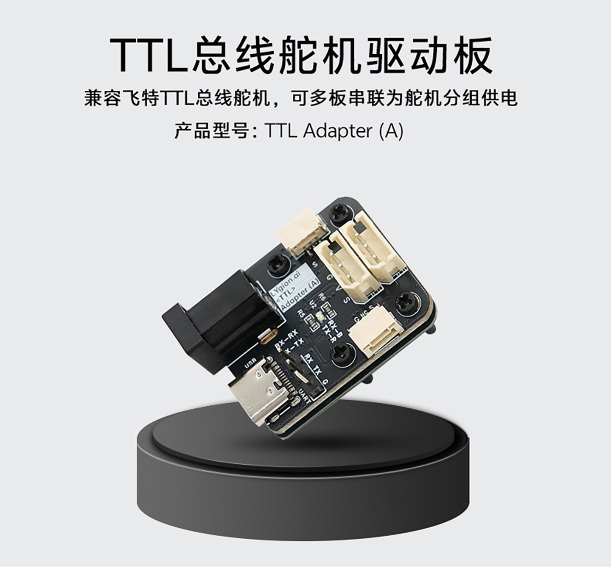

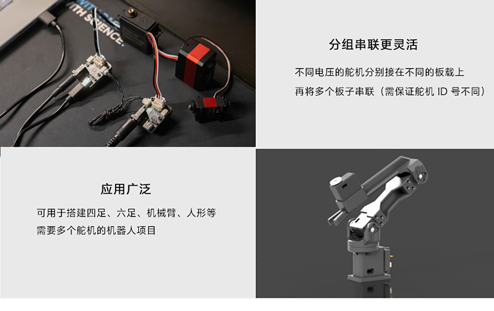
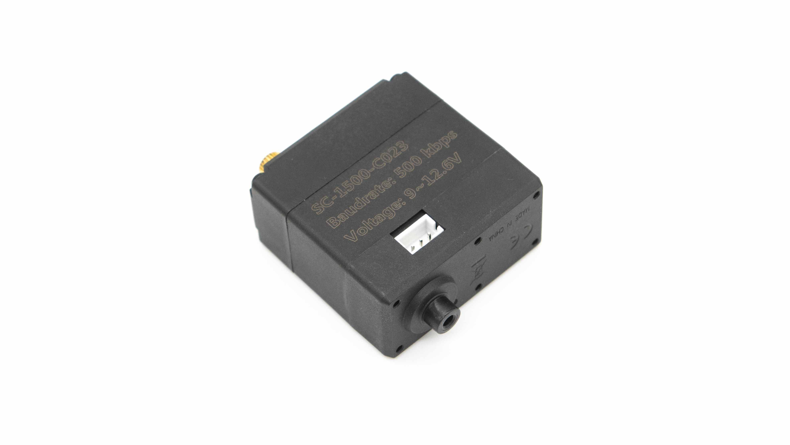
Product highlights
面向机器人原型与产品化集成的高兼容总线驱动板
资料中的定位很明确：这不是单纯把 USB 转成舵机线的转接件，而是一块兼顾控制、通信、供电和系统扩展的超小型 TTL 总线驱动板。它既能服务调试阶段，也适合被直接塞进四足、六足、机械臂等体积敏感产品里。
无需外接电源即可调参与升级
只需一根 USB 线即可与舵机通信、设置参数和升级固件，更适合开发阶段反复调试与出厂前批量配置。
三种控制方式同时接入
UART RX/TX 引脚、USB Type-C 和单线 TTL 接口可以同时接入，自动识别，无需手动切换信号源。
3 Mbps 高速总线通信
资料明确给出最高 3 Mbps 总线速度，适合高端总线设备，能更快获取位置、速度、温度、扭矩锁等反馈信息。
5~25.2V 宽压与 7A DC 插座
板载高质量 DC 插座额定电流可达 7A，可配合不同电压等级的舵机做分组供电与混合系统集成。
兼容开源机器人生态
现有详情图明确标注兼容 LeRobot 及其分支项目，并兼容 Feetech HLS / STS / SCS 系列总线舵机和灵影 EoAT Node (A) 总线节点板。
小尺寸利于嵌入式安装
板载尺寸仅 27 x 35 mm，安装定位孔直径 2.1 mm，孔距 13 x 20 mm，适合对空间要求较高的机器人项目。
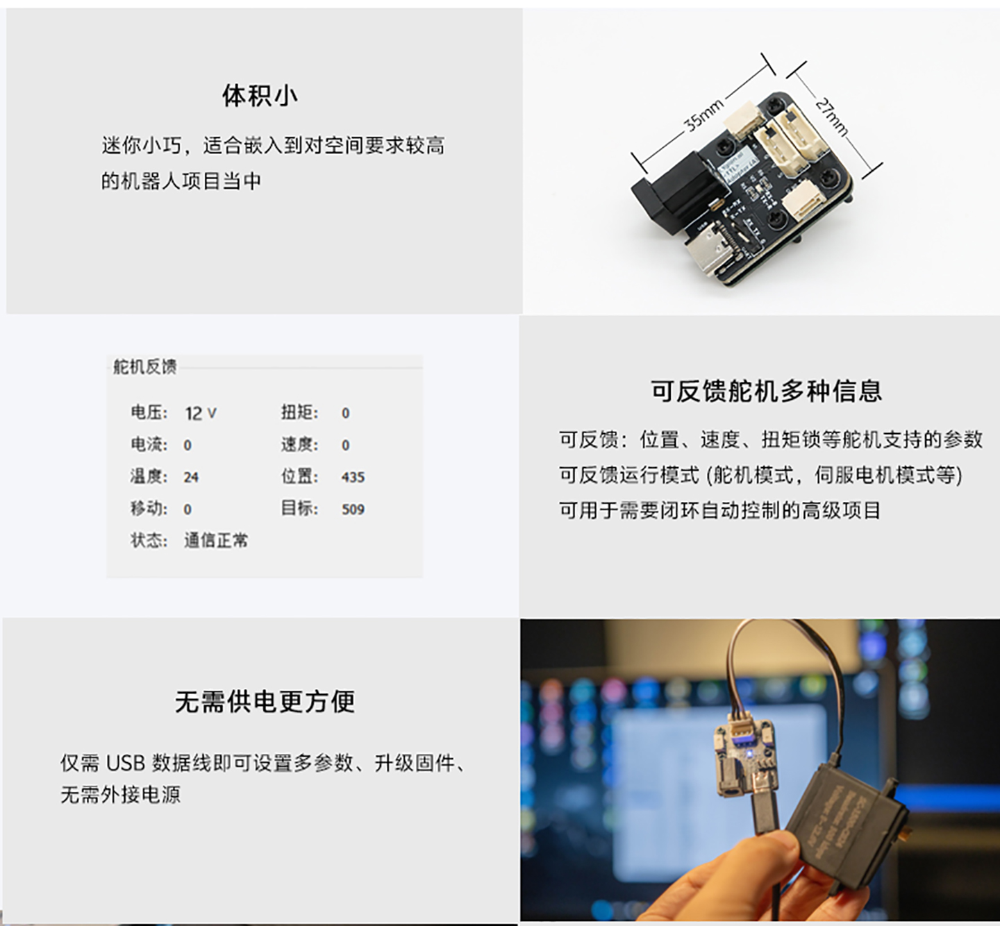
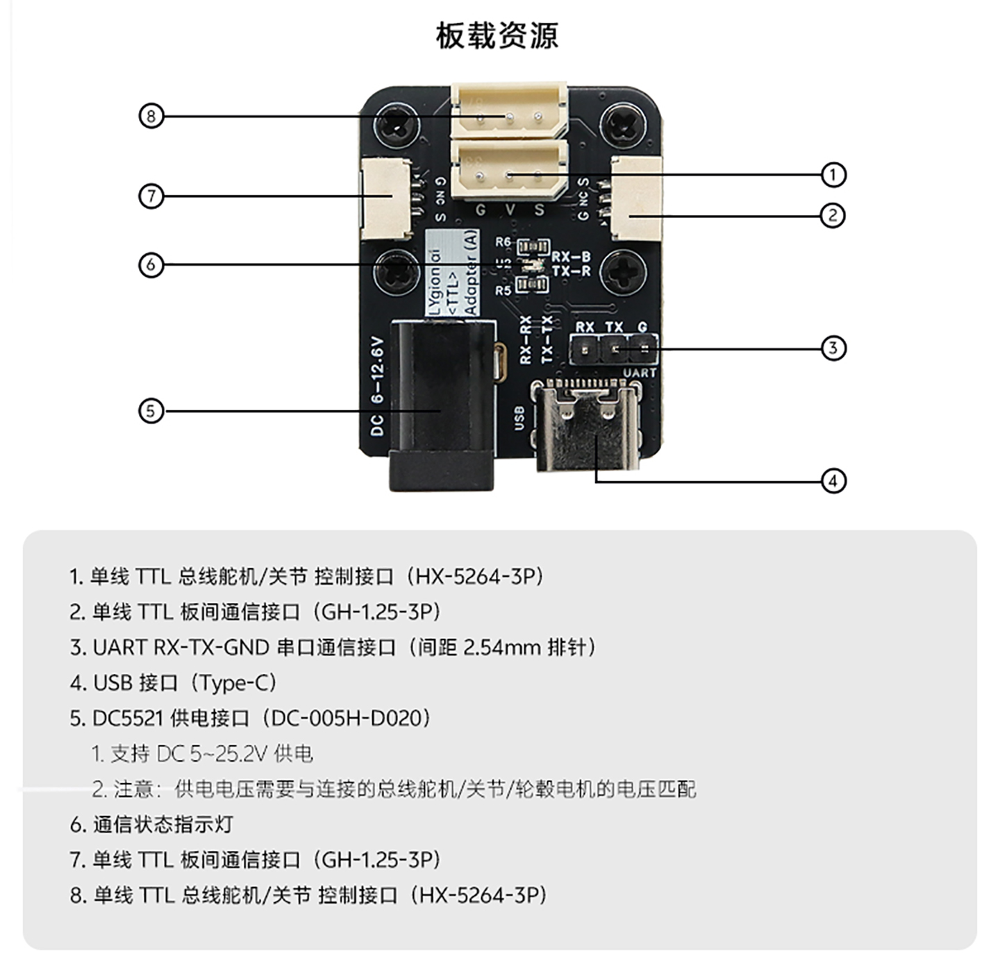
Board resources
接口定义直接面向开发、集成与板间级联
现有详情素材已经把板载资源标注得比较完整。这里将接口与边界整理成 HTML 文本，方便后续用于选型页检索、接线说明引用和 Wiki 补链。
- 单线 TTL 总线舵机 / 关节控制接口：HX-5264-3P，共 2 路，分别位于上侧两组接口位置。
- 单线 TTL 板间通信接口：GH1.25-3P，共 2 路，便于多板串联和分组扩展。
- UART 串口接口：RX / TX / GND，2.54 mm 间距排针，适合 ESP32、ESP32S3、STM32、Arduino 等嵌入式设备。
- USB 接口：Type-C，用于连接 PC、树莓派、Jetson、RK 等带 USB 的主机平台，也可用于调参与升级。
- 供电接口：DC5521，资料标注为 DC-005H-D020，支持 5~25.2V 供电。
- 状态指示：板上带通信状态指示灯，便于确认通信是否正常。
注意：资料明确写明“输入电压需要与连接的总线舵机 / 关节 / 轮毂电机的电压匹配”。因此页面不扩展未证实的线序和默认电源配置，只转录已确认接口与输入范围。
Integration paths
既能做单板驱动，也能做多板分组供电和上位机桥接
TTL Adapter (A) 的价值不只是“把一块板接上一颗舵机”。从详情素材可以确认，它支持多板串联、异电压分组、USB 主机接入和 UART 主控接入，适合把多个关节拆成更清晰的供电与通信拓扑。
多板分组串联
不同电压的舵机可分别接在不同板载上，再把多个板子串联使用，但需确保舵机 ID 不同。
混合供电
多组不同电源供电的舵机可串联在同一路总线中使用，提升复杂系统布线灵活性。
USB 上位机控制
可连接树莓派、Jetson、RK、N100 等带 USB 接口的单板电脑，快速完成原型搭建。
UART 嵌入式控制
可连接 ESP32、ESP32S3、STM32、Arduino 等设备，完成轻量化嵌入式系统集成。
机器人应用
适用于四足、六足、机械臂、人形等需要多个总线舵机的机器人项目。
多信息反馈
可读取位置、速度、扭矩锁等舵机支持的参数，也能反馈运行模式信息，支持更高级的闭环自动控制。
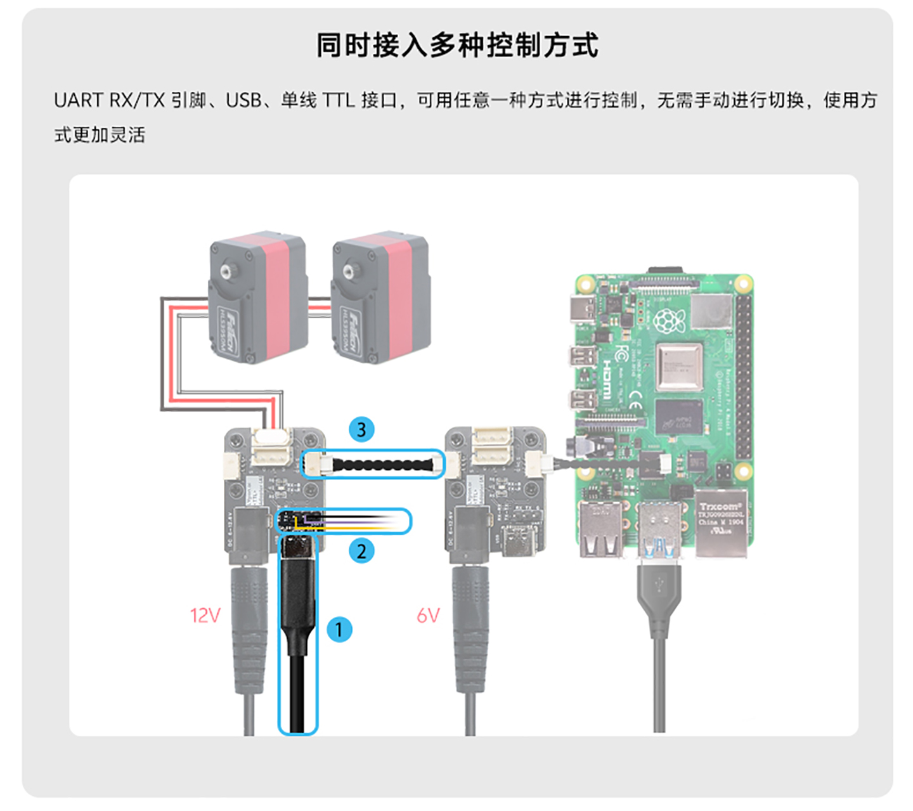
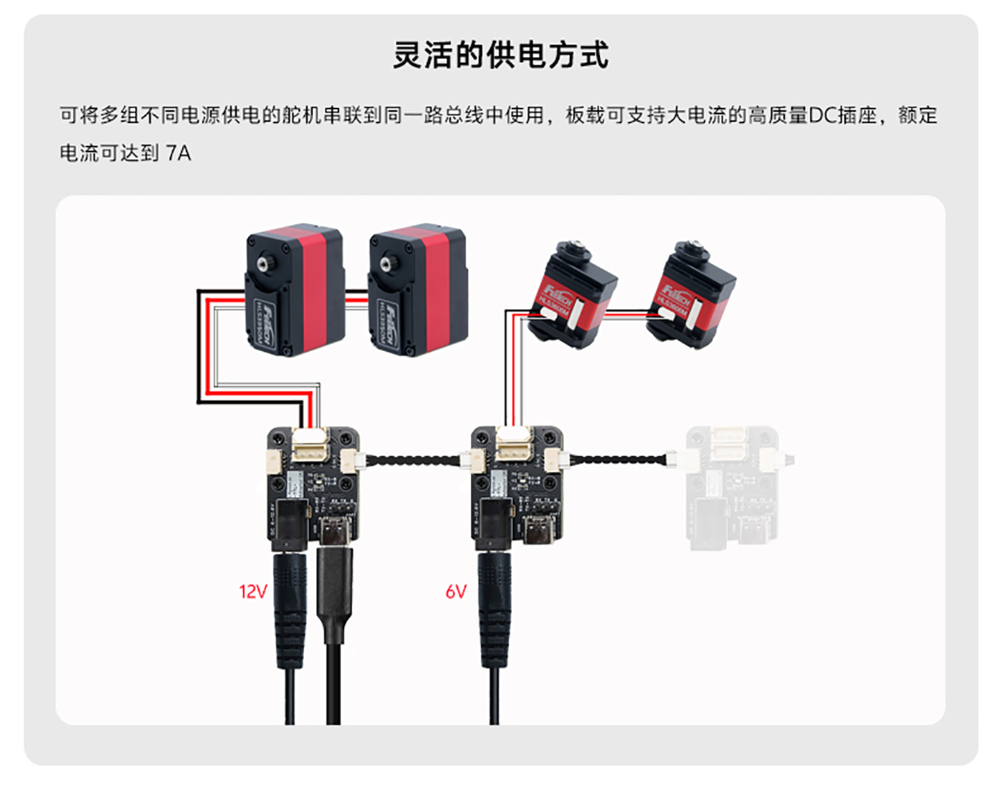
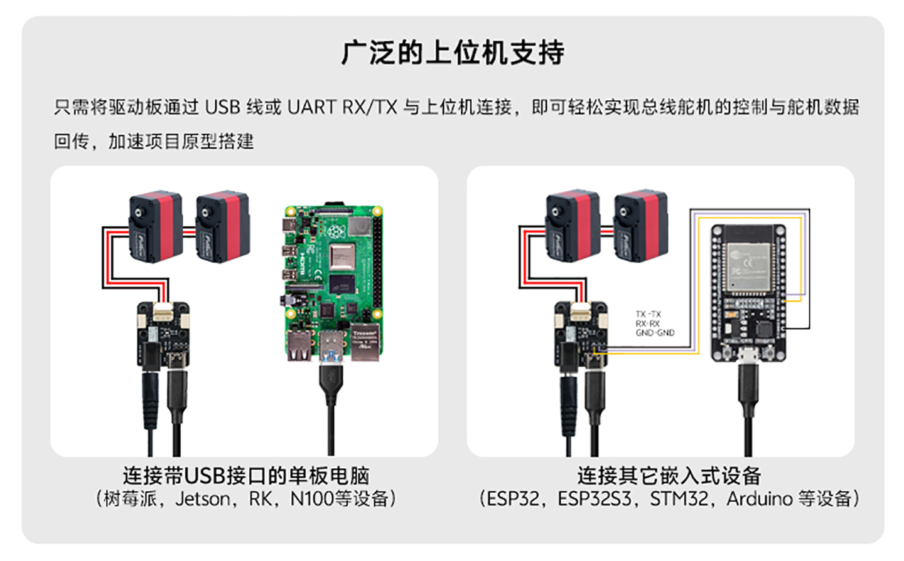
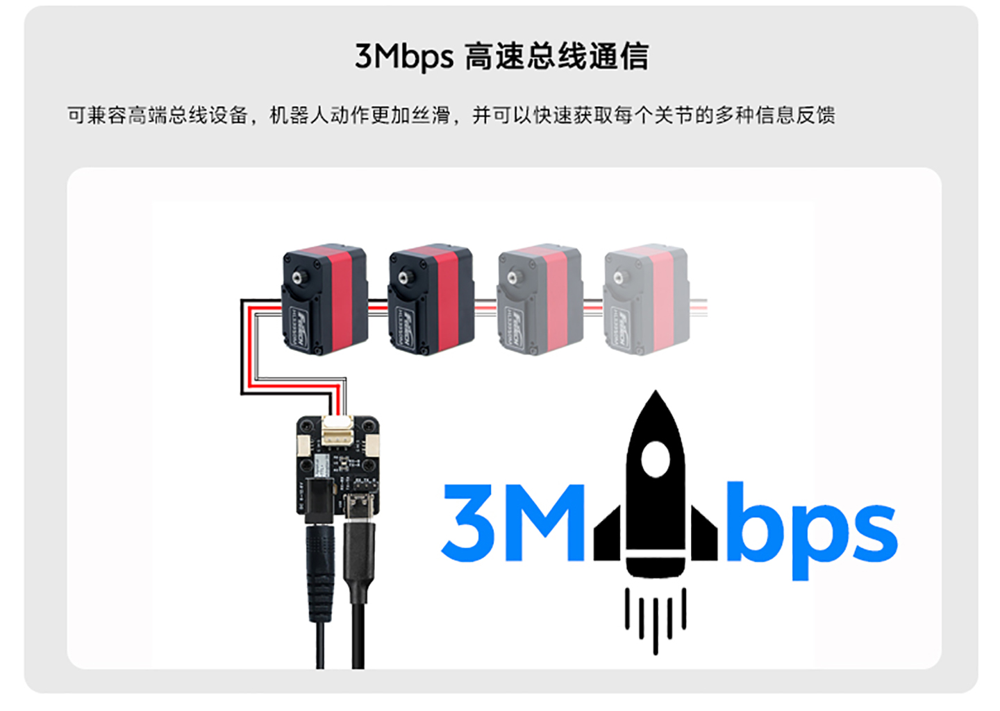
Software and docs
现有资料包已覆盖软件、SDK、教程截图与开源入口
外部资料目录中已经包含调试软件、驱动和多语言 SDK，适合把产品页和后续 Wiki 资料页打通。当前可以直接确认的资料包括：
- 软件工具：`FD1.9.8.5(250729).7z`、`UartAssist.zip`、`CH340_URT.rar`。
- SDK：`FTServo_Arduino-main.zip`、`FTServo_Linux-main.zip`、`FTServo_Python-main.zip`、`FTServo_stm32HAL-main.zip`。
- 开源入口：`Github.txt` 指向 `https://github.com/ftservo`。
- 教程与案例：详情素材中给出上手教程截图、示例代码截图和开源资源截图，可作为正式 Wiki 补充内容。
资料页状态：本页面保留 Wiki 占位入口；等正式地址确定后，可直接把软件下载、SDK 文档和教程链接补到 Wiki 页面。
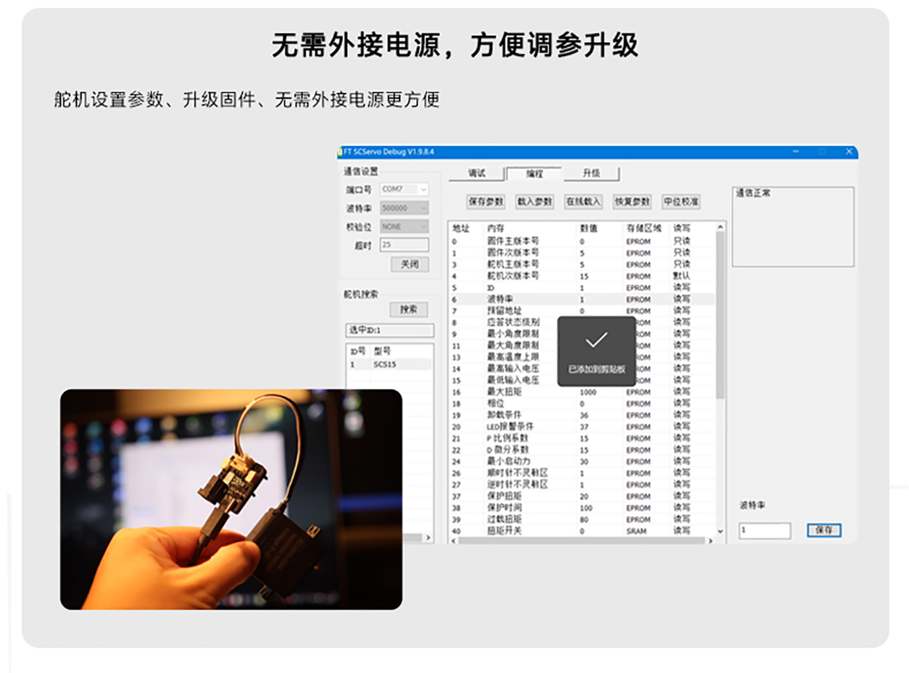
Specifications
TTL Adapter (A) 已确认规格参数
| 产品型号 | TTL Adapter (A) |
|---|---|
| 产品定位 | 面向机器人与嵌入式控制的超小型驱动 / 通信模块 |
| 供电电压 | 5~25.2V，支持 6S 电压输入；输入电压需与所接总线舵机 / 关节 / 轮毂电机的电压匹配 |
| 供电接口 | 5.5 x 2.1 mm DC5521（DC-005H-D020） |
| 额定电流 | 板载高质量 DC 插座额定电流可达 7A |
| 通信接口 | USB Type-C、UART RX/TX（2.54 mm 排针）、单线 TTL 板间接口 GH1.25-3P |
| 舵机控制接口 | 单线 TTL 总线舵机 / 关节控制接口 HX-5264-3P x2 |
| 板间接口 | 单线 TTL 板间通信接口 GH1.25-3P x2 |
| 板载尺寸 | 27 x 35 mm |
| 定位孔直径 | 2.1 mm |
| 定位孔间距 | 13 x 20 mm |
| 支持对象 | Feetech HLS / STS / SCS 系列总线舵机，灵影 EoAT Node (A) 总线节点板 |
| 总线容量 | 总线上支持多达 253 个 HLS / STS / SCS 系列总线舵机（供电需满足功率要求） |
| 结构资料 | 可提供 STEP 模型，详情需联系客户支持 |
Package options
可按交付内容选择不同套装
现有素材已经明确给出三种配件组合，适合区分“只买驱动板”“带数据线调试”“带电源即插即用”三类采购场景。
套装一
TTL Adapter (A) 驱动板 + 连接线
- 双头反向公头 GH1.25-3P 全黑 30 cm 连接线（不含端子长度）
套装二
驱动板 + 连接线 + Type-C 数据线
- 适合 PC 或单板电脑调参与调试
套装三
驱动板 + 连接线 + Type-C 数据线 + 12V 3A DC5521 电源
- 适合直接上电验证和演示环境
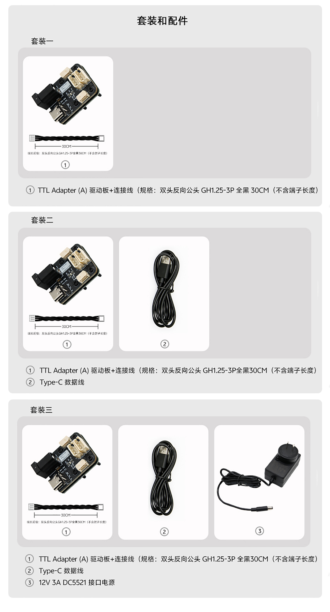
Product gallery
真实产品素材可直接用于评审、培训与二次发布
以下图片均来自现有产品实拍与详情素材，保留开发板接入、模块近景和典型控制对象视角，方便后续在商城、说明文档或 Wiki 中复用。
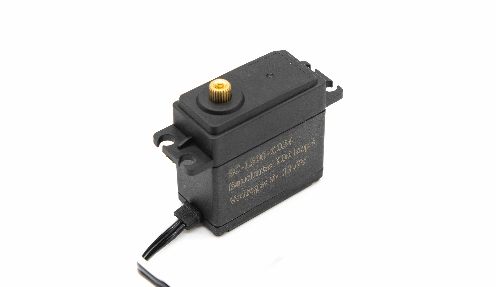
Next step
可继续补充正式 Wiki、软件下载和接线示例
当前页面已经完成中文响应式首版，并预留官网返回入口与 Wiki 按钮。后续适合补充正式 Wiki 地址、软件下载入口、线序图和 SDK 文档跳转。